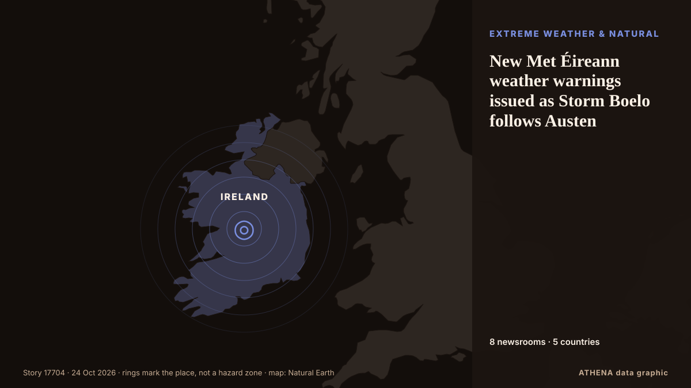

New Met Éireann weather warnings issued as Storm Boelo follows Austen

Orange and yellow weather warnings as more strong winds and heavy rain follow Storm Austen. from The Irish Times
Reported independently by 8 outlets in 5 countries since 20 Oct, first by The Irish Times; coverage is quiet now. ATHENA rates the risk elevated (4.4/10), driven mainly by the severity of the harm described and its geographic and sector reach. Confidence is 78% (high), with 8 independent outlets corroborating it and an average source reliability of 76%.
Why it matters: Energy and resource developments affect fuel and power prices, supply security and climate commitments.
What changed: 10 new reports from 6 newsrooms in the 24 hours to 24 Oct.
First reported as: Orange warnings as Storm Austen to bring 'intense rain'
At a glance
Selected, scored and written by ATHENA's published methodology. No editor intervenes in individual events. How this is produced ›
| 20 Oct 18:59 UTC | 1 |
|---|---|
| 20 Oct 21:59 UTC | 1 |
| 21 Oct 00:59 UTC | 0 |
| 21 Oct 03:59 UTC | 0 |
| 21 Oct 06:59 UTC | 0 |
| 21 Oct 09:59 UTC | 0 |
| 21 Oct 12:59 UTC | 0 |
| 21 Oct 15:59 UTC | 0 |
| 21 Oct 18:59 UTC | 0 |
| 21 Oct 21:59 UTC | 0 |
| 22 Oct 00:59 UTC | 0 |
| 22 Oct 03:59 UTC | 2 |
| 22 Oct 06:59 UTC | 1 |
| 22 Oct 09:59 UTC | 1 |
| 22 Oct 12:59 UTC | 2 |
| 22 Oct 15:59 UTC | 0 |
| 22 Oct 18:59 UTC | 2 |
| 22 Oct 21:59 UTC | 1 |
| 23 Oct 00:59 UTC | 0 |
| 23 Oct 03:59 UTC | 2 |
| 23 Oct 06:59 UTC | 4 |
| 23 Oct 09:59 UTC | 1 |
| 23 Oct 12:59 UTC | 2 |
| 23 Oct 15:59 UTC | 0 |
| 23 Oct 18:59 UTC | 0 |
| 23 Oct 21:59 UTC | 1 |
| 22 Oct 07:10 UTC | 4.4 |
|---|---|
| 23 Oct 08:37 UTC | 4.8 |
| 24 Oct 00:53 UTC | 4.4 |
Why these numbers
Importance
Risk
Confidence
The reporting — who reported it, and when
headline as published · opens the original- The Irish Times · IrelandStorm Austen powers towards Ireland as weather warnings issued for Wednesday and Thursday
- RTÉ News · IrelandOrange warnings as Storm Austen to bring 'intense rain'
- The Irish Times · IrelandStorm Austen: Unions confirm council staff on industrial action to carry out emergency work as needed
- RTÉ News · IrelandOrange rain warning in effect for Cork, Kerry, Waterford
- The Irish Times · IrelandStorm Austen: Orange warnings issued as Ireland braces for torrential rain and wind
- RTÉ News · IrelandAs it happened: Storm Austen to bring 'intense rain'
- RTÉ News · IrelandTown devastated by Storm Babet prepares for Austen
- The Local France · FranceStorm warnings as 140km/h winds forecast for Brittany
- The Irish Times · IrelandStorm Austen Live: Orange weather warnings for six counties as Met Éireann forecasts intense rain across Ireland
- Anadolu Agency (English) · TurkeyFrance issues orange alert in 15 departments ahead of Storm Austen
- RTÉ News · IrelandStorm Boelo set to bring heavy rain and wind over weekend
- RTÉ News · IrelandAs it happened: Orange warnings ahead of Storm Boelo
- Luxembourg Times · LuxembourgYellow alert: Storm Austen set to batter Luxembourg with wind and rain
- Anadolu Agency (English) · TurkeyStorm Austen leaves over 160,000 households without power in France
- The Irish Times · IrelandStorm Boelo latest: Ireland braces for ‘damaging’ second storm as Met Éireann issues new orange warnings
- The Irish Times · IrelandNew Met Éireann weather warnings expected as Storm Boelo follows Austen
- The Irish Times · IrelandNew Met Éireann weather warnings issued as Storm Boelo follows Austen
- The Guardian · United KingdomThousands of homes without power as Storm Austen hits south-west England
- Euronews English · FranceStorm Austen batters France and UK with winds of up to 160 km/h
- The Irish Times · IrelandStorm Boelo: Ireland braces for second storm and ‘intense rain’ as cleanup continues after Austen
- Anadolu Agency (English) · Turkey4 injured, transport disrupted in Brussels as orange alert extended for Storm Austen